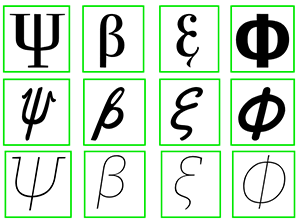
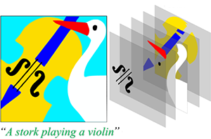
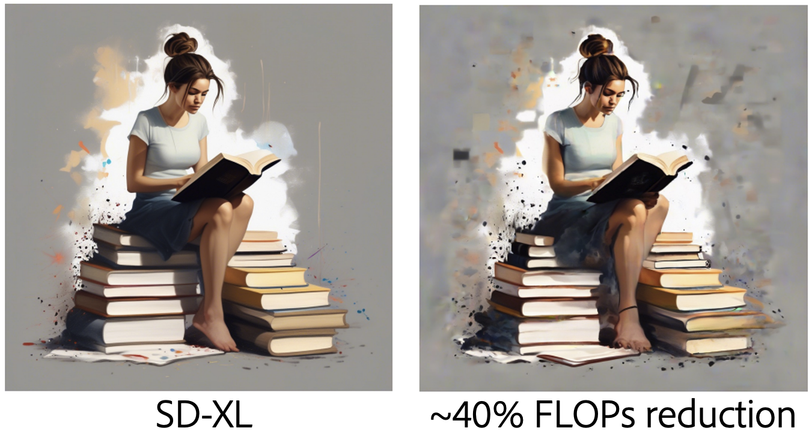
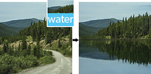
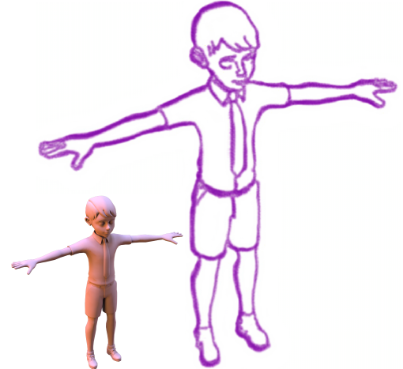
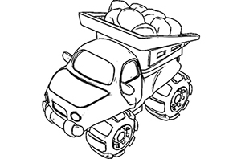
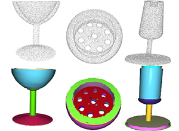
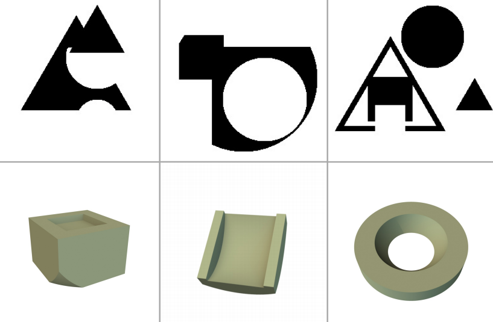
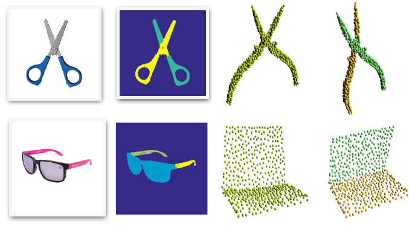
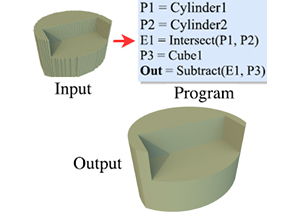

Research
My research interests include generative models, vector graphics and video generation. I am
particularly interested in the synthesis and editing of images, video and vector graphics based on machine learning.

VecFusion: Vector Font Generation with Diffusion
Vikas Thamizharasan *,
Difan Liu Matthew Fisher ,
Michaël Gharbi ,
Oliver Wang ,
Alec Jacobson ,
Evangelos Kalogerakis
CVPR , 2024 (Highlight) PDF

NIVeL: Neural Implicit Vector Layers for Text-to-Vector Generation
Vikas Thamizharasan ,
Difan Liu Matthew Fisher ,
Nanxuan Zhao ,
Evangelos Kalogerakis ,
Michal Lukáč
CVPR , 2024
Visual Layout Composer: Image-Vector Dual Diffusion Model for Design Layout Generation
Mohammad Amin Shabani ,
Zhaowen Wang ,
Difan Liu Nanxuan Zhao ,
Jimei Yang ,
Yasutaka Furukawa
CVPR , 2024

Attention-Driven Training-Free Efficiency Enhancement of Diffusion Models
Hongjie Wang ,
Difan Liu Yan Kang ,
Yijun Li ,
Zhe Lin ,
Niraj Jha ,
Yuchen Liu
CVPR , 2024
SNED: Superposition Network Architecture Search for Efficient Video Diffusion Model
Yan Kang ,
Yuchen Liu ,
Difan Liu Tobias Hinz ,
Feng Liu ,
Yanzhi Wang
CVPR , 2024
LRM: Large Reconstruction Model for Single Image to 3D
Yicong Hong ,
Kai Zhang ,
Jiuxiang Gu ,
Sai Bi ,
Yang Zhou ,
Difan Liu Feng Liu ,
Kalyan Sunkavalli ,
Trung Bui ,
Hao Tan
ICLR , 2024 (Oral Presentation) PDF
/
Project

ASSET: Autoregressive Semantic Scene Editing with Transformers at High Resolutions
Difan Liu Tobias Hinz ,
Matthew Fisher ,
Richard Zhang ,
Taesung Park ,
Evangelos Kalogerakis
SIGGRAPH - Journal Track , 2022 PDF(low-res)
/
PDF(high-res)
/
Project

Neural Strokes: Stylized Line Drawing of 3D Shapes
Difan Liu Matthew Fisher ,
Aaron Hertzmann ,
Evangelos Kalogerakis
ICCV , 2021 PDF
/
Project

Neural Contours: Learning to Draw Lines from 3D Shapes
Difan Liu Aaron Hertzmann ,
Evangelos Kalogerakis
CVPR , 2020 PDF
/
Project

ParSeNet: A Parametric Surface Fitting Network for 3D Point Clouds
Gopal Sharma ,
Difan Liu Subhransu Maji ,
Evangelos Kalogerakis ,
Siddhartha Chaudhuri ,
Radomír Měch
ECCV , 2020 PDF
/
Project

Neural Shape Parsers for Constructive Solid Geometry
Gopal Sharma ,
Rishabh Goyal,
Difan Liu Evangelos Kalogerakis ,
Subhransu Maji
TPAMI , 2020 PDF
/
Code

Deep Part Induction from Articulated Object Pairs
Li Yi ,
Haibin Huang ,
Difan Liu Evangelos Kalogerakis ,
Hao Su ,
Leonidas Guibas
SIGGRAPH Asia , 2018 PDF
/
Code

CSGNet: Neural Shape Parser for Constructive Solid Geometry
Gopal Sharma ,
Rishabh Goyal,
Difan Liu Evangelos Kalogerakis ,
Subhransu Maji
CVPR , 2018 PDF
/
Code
{kind=link}